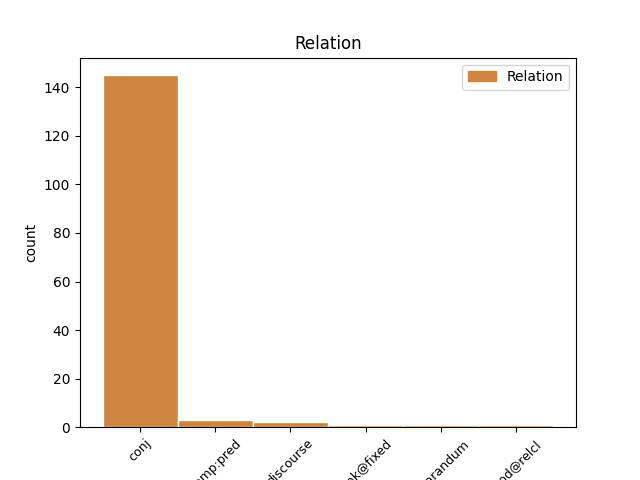

Distribution of features within this leaf


Agreement Rules sorted by frequency.
- When the dependent token is the conjunct(conj) of the head token, and the head token is VERB
1 thug toir VERB V-s Tense=Past 0 _ _ _
2 e _ _ _ _ 0 _ _ _
3 slaic _ _ _ _ 0 _ _ _
4 air _ _ _ _ 0 _ _ _
5 agus _ _ _ _ 0 _ _ _
6 bha bi VERB V-s Tense=Past 1 conj _ _
7 sin _ _ _ _ 0 _ _ _
8 gu _ _ _ _ 0 _ _ _
9 math _ _ _ _ 0 _ _ _
10 follaiseach _ _ _ _ 0 _ _ _
11 bhon _ _ _ _ 0 _ _ _
12 an _ _ _ _ 0 _ _ _
13 taobh _ _ _ _ 0 _ _ _
14 seo _ _ _ _ 0 _ _ _
15 co-dhiubh _ _ _ _ 0 _ _ _
1 Ach _ _ _ _ 0 _ _ _
2 tha _ _ _ _ 0 _ _ _
3 là _ _ _ _ 0 _ _ _
4 na _ _ _ _ 0 _ _ _
5 paidhreach _ _ _ _ 0 _ _ _
6 seo _ _ _ _ 0 _ _ _
7 seachad _ _ _ _ 0 _ _ _
8 agus _ _ _ _ 0 _ _ _
9 foghnaidh foghn VERB V-f Tense=Fut 0 _ _ _
10 na _ _ _ _ 0 _ _ _
11 dh’fhòghnas fhòghn VERB V-f--r Tense=Fut 9 comp:pred _ SpaceAfter=No
12 . _ _ _ _ 0 _ _ _
1 Thig _ _ _ _ 0 _ _ _
2 am _ _ _ _ 0 _ _ _
3 Beeb _ _ _ _ 0 _ _ _
4 , _ _ _ _ 0 _ _ _
5 can _ _ _ _ 0 _ _ _
6 , _ _ _ _ 0 _ _ _
7 thugad _ _ _ _ 0 _ _ _
8 is _ _ _ _ 0 _ _ _
9 iad _ _ _ _ 0 _ _ _
10 deònach _ _ _ _ 0 _ _ _
11 deal _ _ _ _ 0 _ _ _
12 a _ _ _ _ 0 _ _ _
13 dhèanamh _ _ _ _ 0 _ _ _
14 leat _ _ _ _ 0 _ _ _
15 - _ _ _ _ 0 _ _ _
16 tha _ _ _ _ 0 _ _ _
17 iad _ _ _ _ 0 _ _ _
18 airson _ _ _ _ 0 _ _ _
19 gun _ _ _ _ 0 _ _ _
20 sgrìobh _ _ _ _ 0 _ _ _
21 thu _ _ _ _ 0 _ _ _
22 comadaidh _ _ _ _ 0 _ _ _
23 mu _ _ _ _ 0 _ _ _
24 dheidhinn _ _ _ _ 0 _ _ _
25 duine _ _ _ _ 0 _ _ _
26 , _ _ _ _ 0 _ _ _
27 duine _ _ _ _ 0 _ _ _
28 a _ _ _ _ 0 _ _ _
29 tha bi VERB V-p Tense=Pres 31 reparandum _ SpaceAfter=No
30 ... _ _ _ _ 0 _ _ _
31 tha bi VERB V-p Tense=Pres 0 _ _ _
32 ... _ _ _ _ 0 _ _ _
33 a' _ _ _ _ 0 _ _ _
34 ruith _ _ _ _ 0 _ _ _
35 bàta-aiseig _ _ _ _ 0 _ _ _
36 beag _ _ _ _ 0 _ _ _
37 eadar _ _ _ _ 0 _ _ _
38 dà _ _ _ _ 0 _ _ _
39 eilean _ _ _ _ 0 _ _ _
40 . _ _ _ _ 0 _ _ _
1 'S _ _ _ _ 0 _ _ _
2 cha _ _ _ _ 0 _ _ _
3 robh _ _ _ _ 0 _ _ _
4 am _ _ _ _ 0 _ _ _
5 proifeasair _ _ _ _ 0 _ _ _
6 cho _ _ _ _ 0 _ _ _
7 fìor _ _ _ _ 0 _ _ _
8 fhoghlaimte _ _ _ _ 0 _ _ _
9 na _ _ _ _ 0 _ _ _
10 bu _ _ _ _ 0 _ _ _
11 mhotha _ _ _ _ 0 _ _ _
12 : _ _ _ _ 0 _ _ _
13 bheil _ _ _ _ 0 _ _ _
14 cuimhn' _ _ _ _ 0 _ _ _
15 agad _ _ _ _ 0 _ _ _
16 gun _ _ _ _ 0 _ _ _
17 deach _ _ _ _ 0 _ _ _
18 e _ _ _ _ 0 _ _ _
19 tro _ _ _ _ 0 _ _ _
20 ghrunnan _ _ _ _ 0 _ _ _
21 bheairtean-fuaigheil _ _ _ _ 0 _ _ _
22 mun _ _ _ _ 0 _ _ _
23 do _ _ _ _ 0 _ _ _
24 lorg lorg VERB V-s Tense=Past 0 _ _ _
25 e _ _ _ _ 0 _ _ _
26 dè _ _ _ _ 0 _ _ _
27 bha bi VERB V-s Tense=Past 24 mod@relcl _ _
28 toirt _ _ _ _ 0 _ _ _
29 air _ _ _ _ 0 _ _ _
30 a’ _ _ _ _ 0 _ _ _
31 bheairt _ _ _ _ 0 _ _ _
32 a _ _ _ _ 0 _ _ _
33 bhith _ _ _ _ 0 _ _ _
34 dol _ _ _ _ 0 _ _ _
35 às _ _ _ _ 0 _ _ _
36 an _ _ _ _ 0 _ _ _
37 t-sealladh _ _ _ _ 0 _ _ _
38 eadar _ _ _ _ 0 _ _ _
39 a _ _ _ _ 0 _ _ _
40 làmhan _ _ _ _ 0 _ _ _
41 - _ _ _ _ 0 _ _ _
42 cosgais _ _ _ _ 0 _ _ _
43 gun _ _ _ _ 0 _ _ _
44 fheum _ _ _ _ 0 _ _ _
45 . _ _ _ _ 0 _ _ _
1 Thathas _ _ _ _ 0 _ _ _
2 air _ _ _ _ 0 _ _ _
3 a _ _ _ _ 0 _ _ _
4 bhith _ _ _ _ 0 _ _ _
5 rannsachadh _ _ _ _ 0 _ _ _
6 tron _ _ _ _ 0 _ _ _
7 oidhche _ _ _ _ 0 _ _ _
8 san _ _ _ _ 0 _ _ _
9 Turc _ _ _ _ 0 _ _ _
10 feuch _ _ _ _ 0 _ _ _
11 an _ _ _ _ 0 _ _ _
12 d' d' VERB V-s Tense=Past 0 _ _ _
13 thàinig thig VERB V-s Tense=Past 12 unk@fixed _ _
14 an _ _ _ _ 0 _ _ _
15 còrr _ _ _ _ 0 _ _ _
16 beò _ _ _ _ 0 _ _ _
17 às _ _ _ _ 0 _ _ _
18 a' _ _ _ _ 0 _ _ _
19 chrith-thalmhainn _ _ _ _ 0 _ _ _
20 a _ _ _ _ 0 _ _ _
21 bhuail _ _ _ _ 0 _ _ _
22 air _ _ _ _ 0 _ _ _
23 an _ _ _ _ 0 _ _ _
24 dùthaich _ _ _ _ 0 _ _ _
25 an-dè _ _ _ _ 0 _ _ _
26 . _ _ _ _ 0 _ _ _
1 thà bi VERB V-p Tense=Pres 4 discourse _ _
2 draghail _ _ _ _ 0 _ _ _
3 dha-rìribh _ _ _ _ 0 _ _ _
4 tha bi VERB V-p Tense=Pres 0 _ _ _
5 seo _ _ _ _ 0 _ _ _
6 a' _ _ _ _ 0 _ _ _
7 bualadh _ _ _ _ 0 _ _ _
8 air _ _ _ _ 0 _ _ _
9 daoine _ _ _ _ 0 _ _ _
10 neo-chiontach _ _ _ _ 0 _ _ _
Disagree Examples:
1 tha bi VERB V-p Tense=Pres 2 discourse _ _
2 chuala cluinn VERB V-s Tense=Past 0 _ _ _
3 mi _ _ _ _ 0 _ _ _
4 am _ _ _ _ 0 _ _ _
5 boireannach _ _ _ _ 0 _ _ _
1 " _ _ _ _ 0 _ _ _
2 bhuel _ _ _ _ 0 _ _ _
3 , _ _ _ _ 0 _ _ _
4 ma-tha _ _ _ _ 0 _ _ _
5 , _ _ _ _ 0 _ _ _
6 tha bi VERB V-p Tense=Pres 0 _ _ _
7 eich _ _ _ _ 0 _ _ _
8 aig _ _ _ _ 0 _ _ _
9 MacAsgaill _ _ _ _ 0 _ _ _
10 , _ _ _ _ 0 _ _ _
11 is _ _ _ _ 0 _ _ _
12 bheir toir VERB V-f Tense=Fut 6 conj _ _
13 Gealach _ _ _ _ 0 _ _ _
14 nan _ _ _ _ 0 _ _ _
15 Càm _ _ _ _ 0 _ _ _
16 solas _ _ _ _ 0 _ _ _
17 dhuinn _ _ _ _ 0 _ _ _
18 . _ _ _ _ 0 _ _ _
19 " _ _ _ _ 0 _ _ _
1 " _ _ _ _ 0 _ _ _
2 Cha _ _ _ _ 0 _ _ _
3 creid _ _ _ _ 0 _ _ _
4 mi _ _ _ _ 0 _ _ _
5 nach _ _ _ _ 0 _ _ _
6 fhaca faic VERB V-s--d Tense=Past 0 _ _ _
7 mi _ _ _ _ 0 _ _ _
8 na _ _ _ _ 0 _ _ _
9 dh'fhòghnas fhòghn VERB V-f--r Tense=Fut 6 comp:pred _ _
10 de _ _ _ _ 0 _ _ _
11 Lunnainn _ _ _ _ 0 _ _ _
12 . _ _ _ _ 0 _ _ _
13 " _ _ _ _ 0 _ _ _
1 Sgrìobhaidh sgrìobh VERB V-f Tense=Fut 0 _ _ _
2 tusa _ _ _ _ 0 _ _ _
3 an _ _ _ _ 0 _ _ _
4 sgriobt _ _ _ _ 0 _ _ _
5 , _ _ _ _ 0 _ _ _
6 ach _ _ _ _ 0 _ _ _
7 dh’atharraich atharraich VERB V-s Tense=Past 1 conj _ _
8 iad _ _ _ _ 0 _ _ _
9 an _ _ _ _ 0 _ _ _
10 inntinn _ _ _ _ 0 _ _ _
11 . _ _ _ _ 0 _ _ _
1 Sheall seall VERB V-s Tense=Past 0 _ _ _
2 e _ _ _ _ 0 _ _ _
3 air _ _ _ _ 0 _ _ _
4 a _ _ _ _ 0 _ _ _
5 chompanach _ _ _ _ 0 _ _ _
6 , _ _ _ _ 0 _ _ _
7 ach _ _ _ _ 0 _ _ _
8 bha bi VERB V-p Tense=Pres 1 conj _ _
9 am _ _ _ _ 0 _ _ _
10 fear _ _ _ _ 0 _ _ _
11 eile _ _ _ _ 0 _ _ _
12 mar _ _ _ _ 0 _ _ _
13 gum _ _ _ _ 0 _ _ _
14 biodh _ _ _ _ 0 _ _ _
15 ann _ _ _ _ 0 _ _ _
16 an _ _ _ _ 0 _ _ _
17 saoghal _ _ _ _ 0 _ _ _
18 eile _ _ _ _ 0 _ _ _
19 , _ _ _ _ 0 _ _ _
20 domhainn _ _ _ _ 0 _ _ _
21 an _ _ _ _ 0 _ _ _
22 smaoin _ _ _ _ 0 _ _ _
23 . _ _ _ _ 0 _ _ _